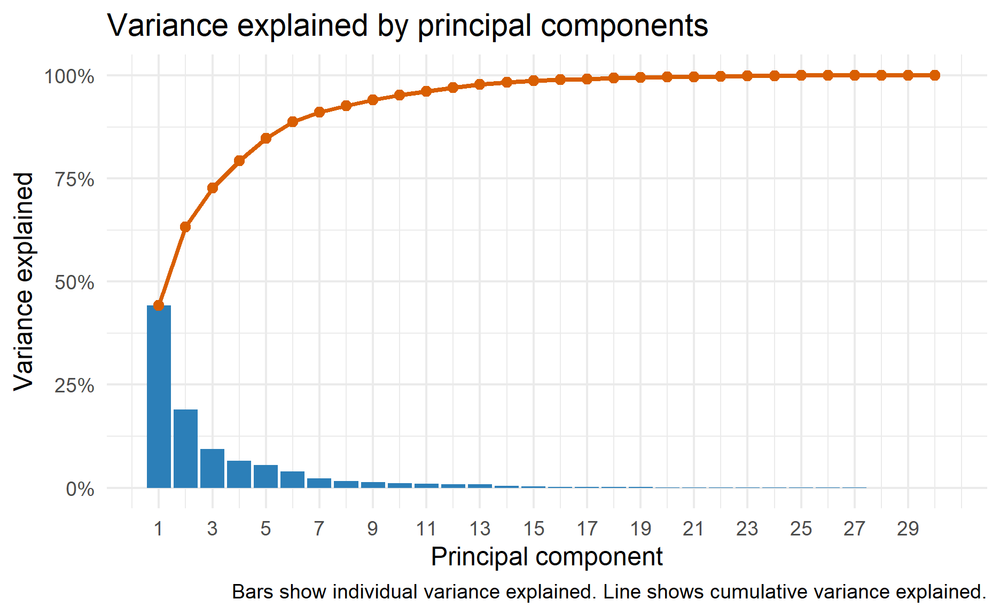
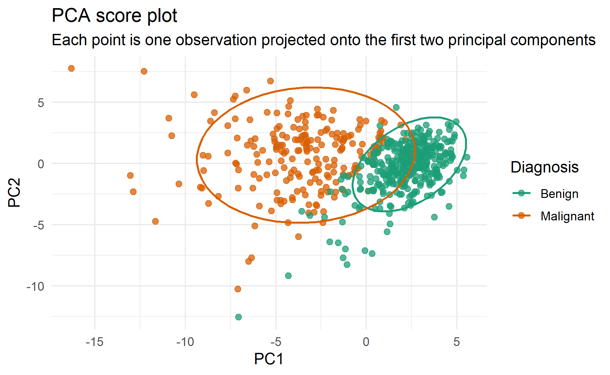
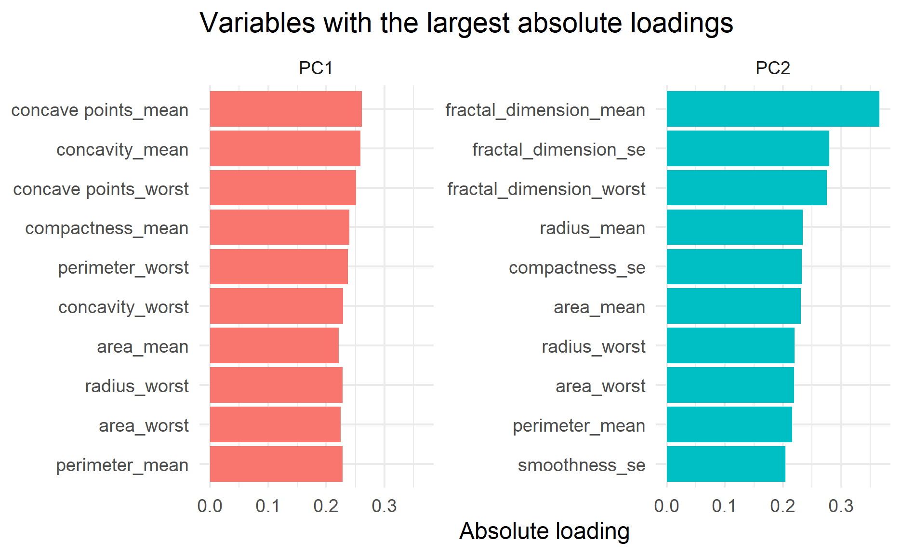
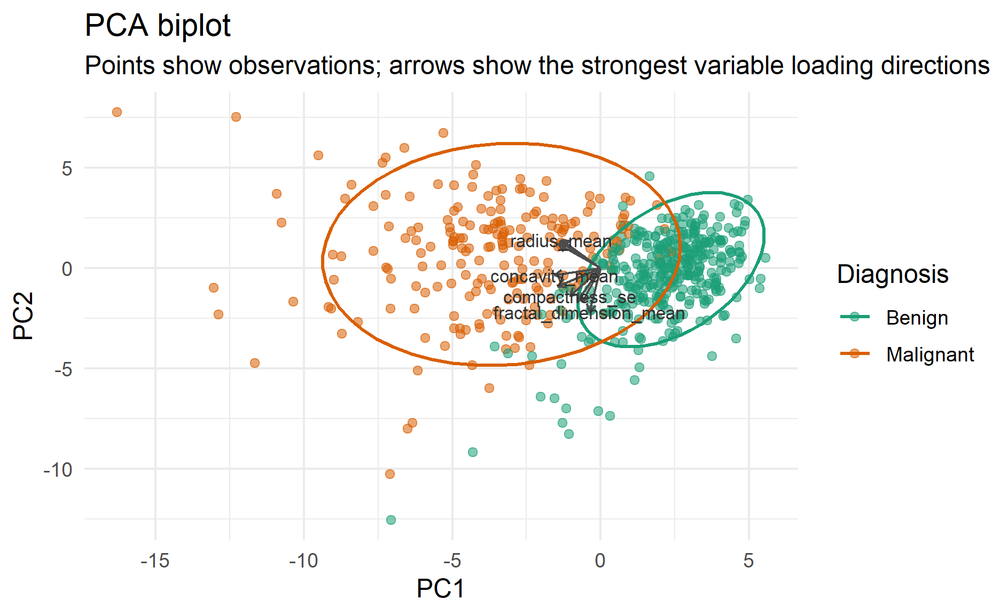

A practical introduction to PCA: how it works, when it is useful, what to watch out for, and how to implement it in R.
Photo by Ryan Fields on Unsplash
Principal component analysis (PCA) is a dimensionality reduction technique. It takes a dataset with many numeric variables and creates a smaller set of new variables called principal components (Jolliffe and Cadima 2016; Abdi and Williams 2010).
Each principal component is a weighted combination of the original variables. The first principal component captures the largest possible amount of variation in the data. The second principal component captures the largest possible amount of the remaining variation, while remaining uncorrelated with the first component. The same idea continues for the later components.
The important idea is that PCA does not choose existing variables. Instead, it builds new axes that summarize the main patterns of variation in the original data.
For example, suppose a dataset has several variables related to size, such as radius, perimeter, and area. These variables are likely to move together. PCA can combine them into one component that represents an overall “size” direction. Instead of looking at all three variables separately, we can examine the component score.
At a high level, PCA follows these steps:
In R, prcomp() performs PCA using singular value decomposition. This is generally the preferred numerical approach because it is stable and efficient.
Another way to describe PCA is that it studies the covariance or correlation structure of the variables. If the variables are measured on very different scales, PCA is usually performed on the correlation matrix, which is equivalent to scaling the variables first. If the variables are already measured on the same meaningful scale, PCA on the covariance matrix may be appropriate.
Mathematically, PCA finds the eigenvectors and eigenvalues of the covariance or correlation matrix. The eigenvectors define the directions of the principal components. The eigenvalues tell us how much variance is captured by each component. A larger eigenvalue means that the corresponding component explains more variation in the data.
The main outputs from PCA are:
Scores and loadings answer different questions. Scores describe where each observation sits on the new PCA axes. Loadings describe how the original variables define those axes.
The loadings are especially useful for interpretation. A high positive or negative loading means the original variable contributes strongly to that principal component. The sign itself is arbitrary: if all signs for a component are flipped, the component still represents the same direction. Therefore, the interpretation should focus on which variables move together and which variables move in opposite directions.
Principal components are orthogonal, meaning that they are uncorrelated with one another. This is one reason PCA can be useful when the original variables are highly correlated.
PCA is useful when a dataset contains many correlated numeric variables. Instead of carrying all variables into an analysis, we can use a smaller number of components that retain most of the original variation.
Common reasons to use PCA include:
PCA is an unsupervised method. This means it does not use the outcome variable when creating the components. If the goal is prediction, PCA may or may not improve model performance. The components that explain the most predictor variation are not always the components that best predict the outcome (James et al. 2021).
PCA is designed for numeric variables. Categorical variables need to be handled separately, for example by using dummy variables, multiple correspondence analysis, or another method suited to the data type.
Scaling is one of the most important choices in PCA. Variables with larger units or wider ranges can dominate the analysis if the data is not scaled.
For most practical use cases, especially when variables are measured in different units, use:
prcomp(x, center = TRUE, scale. = TRUE)prcomp() cannot handle missing values directly. Missing values need to be removed or imputed before PCA.
PCA is sensitive to outliers because it is based on variance. A small number of unusual observations can change the direction of the principal components.
If PCA is part of a predictive modelling workflow, the centering, scaling, and PCA components should be estimated on the training data only. The same transformation should then be applied to the validation or test data. This avoids data leakage.
There is no universal rule, but common approaches include:
PCA appears in many applied data science workflows:
In this demonstration, we will use the data in the data folder. The dataset contains a diagnosis column and 30 numeric measurements. PCA will be performed only on the numeric measurement columns. The diagnosis column will be kept aside and used later to colour the PCA plot.
df_raw <-
read_csv("data/data.csv", show_col_types = FALSE)
glimpse(df_raw)Rows: 568
Columns: 33
$ id <dbl> 842302, 842517, 84300903, 84348301, …
$ diagnosis <chr> "M", "M", "M", "M", "M", "M", "M", "…
$ radius_mean <dbl> 17.990, 20.570, 19.690, 11.420, 20.2…
$ texture_mean <dbl> 10.38, 17.77, 21.25, 20.38, 14.34, 1…
$ perimeter_mean <dbl> 122.80, 132.90, 130.00, 77.58, 135.1…
$ area_mean <dbl> 1001.0, 1326.0, 1203.0, 386.1, 1297.…
$ smoothness_mean <dbl> 0.11840, 0.08474, 0.10960, 0.14250, …
$ compactness_mean <dbl> 0.27760, 0.07864, 0.15990, 0.28390, …
$ concavity_mean <dbl> 0.30010, 0.08690, 0.19740, 0.24140, …
$ `concave points_mean` <dbl> 0.14710, 0.07017, 0.12790, 0.10520, …
$ symmetry_mean <dbl> 0.2419, 0.1812, 0.2069, 0.2597, 0.18…
$ fractal_dimension_mean <dbl> 0.07871, 0.05667, 0.05999, 0.09744, …
$ radius_se <dbl> 1.0950, 0.5435, 0.7456, 0.4956, 0.75…
$ texture_se <dbl> 0.9053, 0.7339, 0.7869, 1.1560, 0.78…
$ perimeter_se <dbl> 8.589, 3.398, 4.585, 3.445, 5.438, 2…
$ area_se <dbl> 153.40, 74.08, 94.03, 27.23, 94.44, …
$ smoothness_se <dbl> 0.006399, 0.005225, 0.006150, 0.0091…
$ compactness_se <dbl> 0.049040, 0.013080, 0.040060, 0.0745…
$ concavity_se <dbl> 0.05373, 0.01860, 0.03832, 0.05661, …
$ `concave points_se` <dbl> 0.015870, 0.013400, 0.020580, 0.0186…
$ symmetry_se <dbl> 0.03003, 0.01389, 0.02250, 0.05963, …
$ fractal_dimension_se <dbl> 0.006193, 0.003532, 0.004571, 0.0092…
$ radius_worst <dbl> 25.38, 24.99, 23.57, 14.91, 22.54, 1…
$ texture_worst <dbl> 17.33, 23.41, 25.53, 26.50, 16.67, 2…
$ perimeter_worst <dbl> 184.60, 158.80, 152.50, 98.87, 152.2…
$ area_worst <dbl> 2019.0, 1956.0, 1709.0, 567.7, 1575.…
$ smoothness_worst <dbl> 0.1622, 0.1238, 0.1444, 0.2098, 0.13…
$ compactness_worst <dbl> 0.6656, 0.1866, 0.4245, 0.8663, 0.20…
$ concavity_worst <dbl> 0.71190, 0.24160, 0.45040, 0.68690, …
$ `concave points_worst` <dbl> 0.26540, 0.18600, 0.24300, 0.25750, …
$ symmetry_worst <dbl> 0.4601, 0.2750, 0.3613, 0.6638, 0.23…
$ fractal_dimension_worst <dbl> 0.11890, 0.08902, 0.08758, 0.17300, …
$ ...33 <lgl> NA, NA, NA, NA, NA, NA, NA, NA, NA, …The last column in the CSV is an empty column created by a trailing comma. We remove that column and the ID field, then convert the diagnosis variable into a factor.
df <-
df_raw %>%
select(-id, -`...33`) %>%
mutate(
diagnosis = factor(
diagnosis,
levels = c("B", "M"),
labels = c("Benign", "Malignant")
)
)
df %>%
count(diagnosis) %>%
kbl() %>%
kable_styling(full_width = FALSE)| diagnosis | n |
|---|---|
| Benign | 356 |
| Malignant | 212 |
PCA should be run on numeric variables only. We separate the numeric measurement columns from the diagnosis label.
pca_data <-
df %>%
select(where(is.numeric))
pca_data %>%
summarise(
variables = ncol(pca_data),
observations = n()
) %>%
kbl() %>%
kable_styling(full_width = FALSE)| variables | observations |
|---|---|
| 30 | 568 |
The variables in this dataset are on different scales. For example, area_mean is much larger than smoothness_mean. Therefore, we center and scale the variables inside prcomp().
pca_fit <-
prcomp(
pca_data,
center = TRUE,
scale. = TRUE
)
pca_fitStandard deviations (1, .., p=30):
[1] 3.64295244 2.38869143 1.67894368 1.40543946 1.28662224 1.09816012
[7] 0.81948734 0.68973063 0.64617612 0.59265704 0.54282363 0.51174870
[13] 0.49126431 0.39418411 0.30696370 0.28022175 0.24367475 0.22979963
[19] 0.22256021 0.17656329 0.17286533 0.16546760 0.15628910 0.13442300
[25] 0.12457521 0.08929458 0.08295289 0.03992805 0.02727751 0.01153443
Rotation (n x k) = (30 x 30):
PC1 PC2 PC3
radius_mean -0.21881792 0.234239054 -0.007631417
texture_mean -0.10516984 0.059204514 0.060139514
perimeter_mean -0.22749134 0.215517827 -0.008474256
area_mean -0.22097286 0.231043649 0.029195638
smoothness_mean -0.14179517 -0.187425036 -0.103127483
compactness_mean -0.23922926 -0.152128477 -0.074383750
concavity_mean -0.25845813 -0.060413846 0.002588374
concave points_mean -0.26092758 0.034483570 -0.025580609
symmetry_mean -0.13791630 -0.190397070 -0.040703541
fractal_dimension_mean -0.06397614 -0.366276130 -0.022587094
radius_se -0.20647288 0.104938875 0.267523939
texture_se -0.01784321 -0.090070005 0.372448884
perimeter_se -0.21176806 0.088889906 0.265765872
area_se -0.20311177 0.151752513 0.215546851
smoothness_se -0.01456053 -0.204320527 0.308569303
compactness_se -0.17007324 -0.232655313 0.155504444
concavity_se -0.15325769 -0.197100361 0.177575326
concave points_se -0.18300683 -0.130503020 0.227226864
symmetry_se -0.04316345 -0.183948547 0.287379772
fractal_dimension_se -0.10243919 -0.279754331 0.211854637
radius_worst -0.22798701 0.219842246 -0.047385014
texture_worst -0.10548434 0.044996460 -0.046664372
perimeter_worst -0.23665530 0.199845857 -0.048459160
area_worst -0.22492615 0.219090225 -0.012030438
smoothness_worst -0.12721259 -0.172738623 -0.260332401
compactness_worst -0.20992016 -0.143718586 -0.236879375
concavity_worst -0.22865404 -0.098113058 -0.173491141
concave points_worst -0.25087269 0.008125428 -0.170441978
symmetry_worst -0.12311738 -0.141954940 -0.272969241
fractal_dimension_worst -0.13149178 -0.275204637 -0.233520028
PC4 PC5 PC6
radius_mean 0.040090513 -0.037815260 2.015011e-02
texture_mean -0.602609820 0.054570943 -2.885626e-02
perimeter_mean 0.040816853 -0.037452684 1.854644e-02
area_mean 0.052977265 -0.010303922 -1.783797e-03
smoothness_mean 0.158911550 0.368500985 -2.819897e-01
compactness_mean 0.033426349 -0.012533967 -1.550206e-02
concavity_mean 0.019595004 -0.086603278 -1.104075e-02
concave points_mean 0.066459107 0.043582261 -5.247323e-02
symmetry_mean 0.071338132 0.301802723 3.604197e-01
fractal_dimension_mean 0.049355816 0.044000935 -1.207142e-01
radius_se 0.099487741 0.154246070 -2.814973e-02
texture_se -0.362830631 0.195931376 -2.101436e-02
perimeter_se 0.090329043 0.120679451 -7.622993e-04
area_se 0.109202805 0.127398593 -4.523055e-02
smoothness_se 0.042442469 0.234124844 -3.404089e-01
compactness_se -0.030521661 -0.279879246 6.788056e-02
concavity_se -0.002611836 -0.353510832 5.444491e-02
concave points_se 0.069039906 -0.195224279 -2.984714e-02
symmetry_se 0.047477112 0.249262056 4.925274e-01
fractal_dimension_se 0.012516610 -0.262247823 -5.652298e-02
radius_worst 0.015617823 0.004352412 -1.693511e-05
texture_worst -0.631765192 0.097863254 -4.501373e-02
perimeter_worst 0.014077494 -0.007620065 8.584123e-03
area_worst 0.026622033 0.027405636 -2.583405e-02
smoothness_worst 0.018780680 0.326045176 -3.663533e-01
compactness_worst -0.089552344 -0.122819321 4.623765e-02
concavity_worst -0.073445239 -0.189049889 2.673057e-02
concave points_worst 0.006613256 -0.043935341 -3.076074e-02
symmetry_worst -0.028505563 0.239038186 5.002492e-01
fractal_dimension_worst -0.075093596 -0.094858599 -8.292372e-02
PC7 PC8 PC9
radius_mean -0.1210825163 0.004695092 -0.223367522
texture_mean 0.0104741267 -0.128347246 0.114156824
perimeter_mean -0.1116498060 0.016213398 -0.224313463
area_mean -0.0506449116 -0.036833252 -0.195214821
smoothness_mean -0.1362708084 0.290157864 0.002938972
compactness_mean 0.0300924469 0.152933522 -0.171656407
concavity_mean -0.1105987684 0.078938331 0.036622885
concave points_mean -0.1530322533 0.157750531 -0.117100373
symmetry_mean -0.0889059857 0.233510165 0.251942541
fractal_dimension_mean 0.2966495161 0.172898641 -0.125331777
radius_se 0.3098287370 -0.022961586 0.251959697
texture_se -0.0793446886 0.469569971 -0.252045366
perimeter_se 0.3128292121 0.011235771 0.228758867
area_se 0.3450330061 -0.088438658 0.232819495
smoothness_se -0.2539394875 -0.570051990 -0.138328581
compactness_se 0.0261977069 -0.121998445 -0.142837535
concavity_se -0.2098142922 -0.054383273 0.357634039
concave points_se -0.3694794470 0.115514547 0.270628379
symmetry_se -0.0775734863 -0.224210800 -0.300272132
fractal_dimension_se 0.1927362061 -0.017296303 -0.212058810
radius_worst -0.0085852365 -0.045222560 -0.110690806
texture_worst 0.0118001462 -0.036657534 0.104680407
perimeter_worst 0.0006675781 -0.032915497 -0.108450604
area_worst 0.0675606370 -0.082082769 -0.078570028
smoothness_worst -0.1140853879 -0.204995591 0.114566318
compactness_worst 0.1407342332 -0.087446270 -0.098519999
concavity_worst -0.0628724524 -0.068753065 0.161940930
concave points_worst -0.1701523777 0.040578008 0.058945060
symmetry_worst -0.0179730470 -0.229626477 0.068932052
fractal_dimension_worst 0.3745225516 -0.055690193 -0.130969409
PC10 PC11 PC12
radius_mean 0.095140499 -0.04134968 0.05153745
texture_mean 0.240972509 0.30227692 0.25694014
perimeter_mean 0.086109375 -0.01700203 0.03972942
area_mean 0.074433373 -0.11027662 0.06715925
smoothness_mean -0.069376443 0.13850391 0.31660719
compactness_mean 0.013815636 0.30446408 -0.10173625
concavity_mean -0.135441907 -0.12797662 0.07220610
concave points_mean 0.008661336 0.06918431 0.04453987
symmetry_mean 0.572340492 -0.16758684 -0.28549936
fractal_dimension_mean 0.081548658 0.03690164 0.23634878
radius_se -0.049504646 0.02631043 -0.01816796
texture_se -0.289389565 -0.34657505 -0.30810322
perimeter_se -0.114135292 0.16748073 -0.10325594
area_se -0.092195271 -0.05026378 -0.01738110
smoothness_se 0.161233625 -0.08606874 -0.29165025
compactness_se 0.043311594 0.20717615 -0.26339601
concavity_se -0.141893459 -0.34915121 0.25521042
concave points_se 0.087571674 0.34434120 -0.01612393
symmetry_se -0.317250438 0.19030106 0.31956203
fractal_dimension_se 0.366275855 -0.24792901 0.27490631
radius_worst 0.076961162 -0.10378242 0.03820208
texture_worst 0.029238767 -0.01188722 0.07827365
perimeter_worst 0.050223567 -0.05028812 -0.01016145
area_worst 0.069366868 -0.18322221 0.04751030
smoothness_worst -0.127950346 -0.14236445 0.05222978
compactness_worst -0.171802740 0.19723287 -0.37205168
concavity_worst -0.311841374 -0.18627177 -0.08293128
concave points_worst -0.075998946 0.11795598 -0.07286427
symmetry_worst -0.029893077 -0.15419262 0.04128698
fractal_dimension_worst 0.012632883 -0.11634594 -0.03667799
PC13 PC14 PC15
radius_mean 0.012396516 0.055025428 -0.055454188
texture_mean 0.203693986 -0.029834626 -0.111928604
perimeter_mean 0.044552430 0.043897294 -0.043403822
area_mean 0.065629657 0.007085894 0.009987339
smoothness_mean 0.048934823 0.442005756 -0.119844893
compactness_mean 0.229014173 0.011142195 0.237647263
concavity_mean 0.378992188 -0.188553490 -0.123000108
concave points_mean 0.122108465 -0.233050979 -0.208528446
symmetry_mean 0.194363052 0.024911521 -0.077639014
fractal_dimension_mean 0.096984352 -0.388433284 0.512632356
radius_se -0.066593367 0.013824991 -0.107531515
texture_se -0.169311797 -0.005108548 0.032532749
perimeter_se -0.033938446 -0.046807361 -0.008156501
area_se 0.060951234 0.075707134 -0.047515667
smoothness_se 0.152782284 -0.205730067 0.014160273
compactness_se 0.025357009 0.490624890 0.174537546
concavity_se 0.156722951 0.129438112 0.248537331
concave points_se -0.494364620 -0.194014242 0.056553923
symmetry_se 0.006857735 -0.052162932 -0.116631652
fractal_dimension_se -0.246596324 0.161242858 -0.344253014
radius_worst -0.138946835 0.025134279 0.166034693
texture_worst -0.079430686 0.054508904 0.104893974
perimeter_worst -0.096905138 0.012997317 0.182525721
area_worst -0.103312398 -0.005544014 0.313918006
smoothness_worst -0.205487957 0.168620197 0.053649776
compactness_worst 0.023824297 0.162515725 -0.052708575
concavity_worst 0.218703278 -0.074047117 -0.210891711
concave points_worst -0.259017626 -0.267166881 -0.167529151
symmetry_worst -0.256968936 0.012703139 0.144710246
fractal_dimension_worst -0.174060100 -0.217446340 -0.268104837
PC16 PC17 PC18
radius_mean -0.14358839 0.203613164 0.164365922
texture_mean -0.15466082 -0.035259916 -0.036672756
perimeter_mean -0.10710195 0.194357959 0.175766038
area_mean -0.12649020 0.253638393 0.273302158
smoothness_mean -0.21216980 0.180531771 -0.349422491
compactness_mean 0.15363662 -0.016563108 0.023214283
concavity_mean 0.27925673 -0.010022302 -0.032450972
concave points_mean 0.38872219 0.025074716 -0.095181666
symmetry_mean -0.16267415 -0.193544665 0.167648968
fractal_dimension_mean -0.03555338 0.045490001 0.083185503
radius_se 0.05339836 -0.133481903 -0.229887257
texture_se -0.03881154 0.046856344 -0.004965596
perimeter_se 0.02769637 -0.023350884 -0.010857275
area_se 0.05896805 0.321600972 0.290318228
smoothness_se -0.05201745 0.144708017 -0.230325964
compactness_se 0.18343511 -0.016317539 0.085520245
concavity_se -0.13619137 0.092365569 0.012373655
concave points_se -0.19825979 0.112431955 0.051481166
symmetry_se -0.15469161 -0.277103718 0.177730696
fractal_dimension_se 0.26631419 -0.126478457 -0.061474065
radius_worst -0.09547812 -0.231897733 -0.219324340
texture_worst 0.18844699 0.062837866 0.050593401
perimeter_worst -0.06703311 -0.227544281 -0.189414171
area_worst -0.10815407 -0.267400337 -0.165540592
smoothness_worst 0.13609211 -0.287967235 0.506785908
compactness_worst -0.15809516 0.003046941 -0.068923389
concavity_worst -0.20911141 -0.188095108 -0.110115286
concave points_worst 0.19130079 -0.086968189 0.054696741
symmetry_worst 0.25767135 0.433842410 -0.266064510
fractal_dimension_worst -0.39222314 0.166786671 0.032150956
PC19 PC20 PC21
radius_mean 0.214705896 -0.043913074 -0.0682390819
texture_mean 0.030514424 -0.271096264 0.4357280922
perimeter_mean 0.228979742 -0.011427825 -0.0667040494
area_mean -0.047477310 -0.091181648 -0.0282417981
smoothness_mean -0.151354737 0.022928033 -0.1181022854
compactness_mean 0.281576766 0.473201369 0.2183034431
concavity_mean 0.008807391 -0.033632800 0.0006957246
concave points_mean -0.146099342 -0.238699242 -0.0372559141
symmetry_mean -0.066777101 0.031013696 -0.0871908440
fractal_dimension_mean -0.060602472 -0.164359332 -0.0717613871
radius_se 0.190511517 -0.096366839 0.0781843438
texture_se 0.034375016 -0.085521103 0.2131880462
perimeter_se 0.368995033 -0.153843226 -0.3074603541
area_se -0.434871691 0.261003377 0.2104194996
smoothness_se -0.002653827 0.095991649 -0.0621099083
compactness_se -0.245052839 -0.452183463 -0.1734120815
concavity_se 0.120897057 0.057945421 0.0552243358
concave points_se -0.018338133 0.062767793 0.0312792534
symmetry_se -0.096454243 0.112169139 -0.0950979635
fractal_dimension_se 0.093736033 0.223881415 0.0917577604
radius_worst 0.026009291 -0.006646358 0.0051324073
texture_worst -0.076267578 0.337404927 -0.5780200228
perimeter_worst 0.102743064 0.018564367 -0.0873730994
area_worst -0.403542254 0.046172466 0.1411240472
smoothness_worst 0.211733800 -0.140552089 0.1515143331
compactness_worst 0.021004457 0.217205187 0.1973689072
concavity_worst -0.037520601 -0.030317673 -0.1135543575
concave points_worst -0.259080369 0.040488574 0.0209125244
symmetry_worst 0.128958871 -0.125261087 0.1610802637
fractal_dimension_worst -0.018977724 -0.109462901 -0.1258104515
PC22 PC23 PC24
radius_mean -0.07731381 -0.0983949886 -0.182903394
texture_mean -0.07822058 -0.0001888397 0.099263358
perimeter_mean -0.07824063 -0.0400631736 -0.116294438
area_mean -0.10896641 0.0065640660 0.066928802
smoothness_mean -0.07304312 -0.0217746598 0.066195167
compactness_mean 0.11671843 0.0532791141 -0.104176869
concavity_mean 0.19197873 0.3258872109 0.049957831
concave points_mean 0.30808462 -0.0511101768 0.084174646
symmetry_mean 0.01371651 -0.0516774339 0.018963772
fractal_dimension_mean -0.29349478 -0.0842161500 -0.133777661
radius_se 0.15639165 -0.2617733751 -0.558295839
texture_se -0.04060584 -0.0006993103 0.024279120
perimeter_se -0.17794235 0.0867035878 0.515388816
area_se -0.05019704 0.0996007493 -0.021421013
smoothness_se -0.05113984 -0.0599225554 0.015374339
compactness_se 0.02706653 0.0076933518 -0.123463084
concavity_se 0.20601924 -0.3887735252 0.187006981
concave points_se 0.07363305 0.3517522546 -0.108053781
symmetry_se 0.08204298 -0.0425156577 0.003389405
fractal_dimension_se -0.23415559 0.0869911238 0.075938549
radius_worst 0.09925574 -0.0550973375 -0.156233441
texture_worst 0.08957331 -0.0093586133 -0.119089189
perimeter_worst -0.01848985 0.0627031617 0.238808203
area_worst 0.10128855 0.1904885262 0.143507786
smoothness_worst 0.07342549 0.0938674243 -0.009793842
compactness_worst -0.01541508 -0.1463081573 0.188913238
concavity_worst -0.46741258 0.2868749170 -0.291227555
concave points_worst -0.29772778 -0.5675722075 0.104556783
symmetry_worst -0.09053819 0.1220271385 -0.014013983
fractal_dimension_worst 0.45865930 0.0057155638 0.037459520
PC25 PC26 PC27
radius_mean -0.01981409 -0.1232418217 -0.143162384
texture_mean 0.08521837 -0.0204433839 -0.018114324
perimeter_mean 0.02690767 -0.1161953993 -0.124706604
area_mean -0.21094471 0.3179520291 0.490384649
smoothness_mean 0.02844671 -0.0480792105 0.063252685
compactness_mean 0.39649533 0.2609169980 0.120927534
concavity_mean -0.09485180 -0.5703292747 0.323289088
concave points_mean -0.18654987 0.4273833236 -0.420401488
symmetry_mean -0.02468804 -0.0163358703 -0.017073944
fractal_dimension_mean -0.20817175 -0.0938604563 -0.110626908
radius_se -0.17661593 0.0345234592 0.217519071
texture_se 0.05717817 -0.0104158149 -0.011003662
perimeter_se 0.07380894 0.1009671732 0.049971715
area_se 0.13246591 -0.1307558808 -0.325315292
smoothness_se 0.03116169 -0.0064433208 -0.009432141
compactness_se 0.17265266 -0.0581723490 0.040315030
concavity_se 0.01592020 0.0988038029 -0.076521861
concave points_se -0.12896098 -0.0190574727 -0.013331046
symmetry_se -0.01950127 -0.0155168941 -0.021223759
fractal_dimension_se -0.08412769 0.0386447753 -0.008233602
radius_worst 0.07049481 -0.1848676858 -0.194630783
texture_worst -0.11887409 0.0322723327 0.023246363
perimeter_worst 0.11912916 -0.2236071160 -0.259248262
area_worst -0.03792114 0.2163367359 0.256612789
smoothness_worst -0.04752953 0.0170442381 -0.038990807
compactness_worst -0.62376682 -0.0939002013 -0.077798361
concavity_worst 0.11413127 0.2715210343 -0.123911045
concave points_worst 0.26214974 -0.1512849310 0.219047699
symmetry_worst 0.04550602 0.0280283551 0.025730739
fractal_dimension_worst 0.28087322 0.0006004924 0.060492616
PC28 PC29 PC30
radius_mean 2.112305e-01 0.2157265753 0.7009834153
texture_mean -7.742108e-05 -0.0107432091 0.0003827654
perimeter_mean 8.370192e-02 0.3826168120 -0.6918171416
area_mean -2.724280e-01 -0.4258095956 -0.0305755002
smoothness_mean 1.647280e-03 -0.0023444101 -0.0051534348
compactness_mean -5.853579e-03 -0.0436060026 0.0457397550
concavity_mean 4.581460e-02 -0.0086001286 0.0248446031
concave points_mean -9.184975e-03 -0.0061418488 -0.0004658549
symmetry_mean 1.503713e-03 -0.0072174675 -0.0013687353
fractal_dimension_mean -6.113025e-03 0.0086628671 -0.0052161429
radius_se -1.929372e-01 0.1172540869 -0.0087922396
texture_se -5.598335e-03 -0.0086687668 -0.0010810217
perimeter_se 2.635559e-01 -0.0064702573 0.0139473429
area_se -4.173407e-02 -0.0844417994 0.0009433993
smoothness_se 9.801629e-03 0.0017424752 -0.0016061868
compactness_se -1.526524e-02 0.0040654066 0.0016210445
concavity_se 5.750213e-03 0.0157442026 -0.0089109676
concave points_se -2.886294e-02 -0.0234885910 -0.0022052753
symmetry_se -7.618583e-03 -0.0051228832 0.0003182504
fractal_dimension_se 1.971779e-02 -0.0088751571 0.0020034974
radius_worst 4.135580e-01 -0.6341258071 -0.1339462070
texture_worst -4.148289e-04 0.0172968564 0.0009424319
perimeter_worst -7.281712e-01 0.0240998236 0.0793828449
area_worst 2.382200e-01 0.4436203653 0.0386913863
smoothness_worst -1.563186e-03 0.0072472318 0.0045994543
compactness_worst 4.881739e-02 0.0006769587 -0.0130699838
concavity_worst -1.771267e-02 -0.0131239376 0.0005715732
concave points_worst 2.243917e-02 0.0354450961 -0.0024946867
symmetry_worst 4.833232e-03 0.0129483326 0.0004958940
fractal_dimension_worst -2.363231e-02 0.0112910198 0.0019128301The first question after running PCA is usually: how much variation does each component explain?
pca_variance <-
tibble(
component = paste0("PC", seq_along(pca_fit$sdev)),
eigenvalue = pca_fit$sdev^2,
variance_explained = eigenvalue / sum(eigenvalue),
cumulative_variance = cumsum(variance_explained)
)
pca_variance %>%
slice_head(n = 10) %>%
mutate(
variance_explained = percent(variance_explained, accuracy = 0.1),
cumulative_variance = percent(cumulative_variance, accuracy = 0.1)
) %>%
kbl() %>%
kable_styling(full_width = FALSE)| component | eigenvalue | variance_explained | cumulative_variance |
|---|---|---|---|
| PC1 | 13.2711024 | 44.2% | 44.2% |
| PC2 | 5.7058468 | 19.0% | 63.3% |
| PC3 | 2.8188519 | 9.4% | 72.7% |
| PC4 | 1.9752601 | 6.6% | 79.2% |
| PC5 | 1.6553968 | 5.5% | 84.8% |
| PC6 | 1.2059557 | 4.0% | 88.8% |
| PC7 | 0.6715595 | 2.2% | 91.0% |
| PC8 | 0.4757283 | 1.6% | 92.6% |
| PC9 | 0.4175436 | 1.4% | 94.0% |
| PC10 | 0.3512424 | 1.2% | 95.2% |
pca_variance %>%
mutate(component_number = row_number()) %>%
ggplot(aes(x = component_number, y = variance_explained)) +
geom_col(fill = "#2C7FB8") +
geom_line(aes(y = cumulative_variance), colour = "#D95F02", linewidth = 1) +
geom_point(aes(y = cumulative_variance), colour = "#D95F02", size = 2) +
scale_x_continuous(breaks = seq(1, nrow(pca_variance), by = 2)) +
scale_y_continuous(labels = percent_format()) +
labs(
title = "Variance explained by principal components",
x = "Principal component",
y = "Variance explained",
caption = "Bars show individual variance explained. Line shows cumulative variance explained."
)
The first principal component explains about 44.3% of the total variance, while the first two principal components explain about 63.2%. The first five components explain about 84.7%, and the first seven components explain about 91.0%.
This tells us that the 30 original numeric measurements contain substantial shared structure. A much smaller number of principal components can summarize most of the variation in the dataset. Later components explain smaller amounts of variation and may contain less useful signal.
The PCA scores are the coordinates of each observation on the new principal component axes.
pca_scores <-
as_tibble(pca_fit$x) %>%
bind_cols(diagnosis = df$diagnosis)
pca_scores %>%
select(diagnosis, PC1, PC2, PC3) %>%
slice_head(n = 10) %>%
kbl(digits = 3) %>%
kable_styling(full_width = FALSE)| diagnosis | PC1 | PC2 | PC3 |
|---|---|---|---|
| Malignant | -9.174 | -1.954 | -1.119 |
| Malignant | -2.378 | 3.770 | -0.517 |
| Malignant | -5.724 | 1.070 | -0.548 |
| Malignant | -7.105 | -10.277 | -3.253 |
| Malignant | -3.922 | 1.947 | 1.410 |
| Malignant | -2.365 | -3.952 | -2.932 |
| Malignant | -2.230 | 2.689 | -1.636 |
| Malignant | -2.131 | -2.343 | -0.877 |
| Malignant | -3.163 | -3.396 | -3.128 |
| Malignant | -6.335 | -7.726 | -4.365 |
We can plot the first two principal components to visualize the observations in a two-dimensional space.
pca_scores %>%
ggplot(aes(x = PC1, y = PC2, colour = diagnosis)) +
geom_point(alpha = 0.75, size = 2) +
stat_ellipse(linewidth = 0.8) +
scale_colour_manual(values = c("Benign" = "#1B9E77", "Malignant" = "#D95F02")) +
labs(
title = "PCA score plot",
subtitle = "Each point is one observation projected onto the first two principal components",
x = "PC1",
y = "PC2",
colour = "Diagnosis"
)
This plot is useful for exploration. The benign and malignant observations show visible separation along the first two components, especially along PC1. This suggests that the original numeric measurements contain structure related to diagnosis. However, PCA itself did not use the diagnosis label to find the components, so the plot should be treated as exploratory evidence rather than as a supervised classification result.
Loadings show how strongly each original variable contributes to a principal component.
pca_loadings <-
as_tibble(
pca_fit$rotation,
rownames = "variable"
)
pca_loadings %>%
select(variable, PC1, PC2) %>%
mutate(
abs_PC1 = abs(PC1),
abs_PC2 = abs(PC2)
) %>%
arrange(desc(abs_PC1)) %>%
select(variable, PC1, PC2) %>%
slice_head(n = 10) %>%
kbl(digits = 3) %>%
kable_styling(full_width = FALSE)| variable | PC1 | PC2 |
|---|---|---|
| concave points_mean | -0.261 | 0.034 |
| concavity_mean | -0.258 | -0.060 |
| concave points_worst | -0.251 | 0.008 |
| compactness_mean | -0.239 | -0.152 |
| perimeter_worst | -0.237 | 0.200 |
| concavity_worst | -0.229 | -0.098 |
| radius_worst | -0.228 | 0.220 |
| perimeter_mean | -0.227 | 0.216 |
| area_worst | -0.225 | 0.219 |
| area_mean | -0.221 | 0.231 |
pca_loadings %>%
select(variable, PC1, PC2) %>%
pivot_longer(
cols = c(PC1, PC2),
names_to = "component",
values_to = "loading"
) %>%
group_by(component) %>%
slice_max(abs(loading), n = 10) %>%
ungroup() %>%
mutate(variable = reorder(variable, abs(loading))) %>%
ggplot(aes(x = abs(loading), y = variable, fill = component)) +
geom_col(show.legend = FALSE) +
facet_wrap(~ component, scales = "free_y") +
labs(
title = "Variables with the largest absolute loadings",
x = "Absolute loading",
y = NULL
)
For this dataset, PC1 is driven strongly by variables related to concavity, concave points, compactness, radius, perimeter, and area. A reasonable interpretation is that PC1 captures a broad tumour size, boundary, and irregularity pattern rather than size alone.
PC2 has a different interpretation. It gives relatively high weight to variables such as fractal dimension, compactness standard error, smoothness standard error, and some size-related measures. This suggests that PC2 captures a contrast between texture or shape-complexity measurements and the broad size-irregularity pattern captured by PC1.
Because the sign of a principal component is arbitrary, the direction of the interpretation should not depend on whether these loadings are positive or negative. The important point is which variables contribute together.
A biplot shows both observations and variable directions. It can be helpful, but it can also become crowded when there are many variables. The code below labels only the variables with the largest combined contribution to PC1 and PC2.
loading_scale <- 6
biplot_loadings <-
pca_loadings %>%
mutate(contribution = PC1^2 + PC2^2) %>%
slice_max(contribution, n = 12) %>%
mutate(
PC1 = PC1 * loading_scale,
PC2 = PC2 * loading_scale
)
pca_scores %>%
ggplot(aes(x = PC1, y = PC2, colour = diagnosis)) +
geom_point(alpha = 0.55, size = 1.8) +
stat_ellipse(linewidth = 0.8) +
geom_segment(
data = biplot_loadings,
aes(x = 0, y = 0, xend = PC1, yend = PC2),
inherit.aes = FALSE,
arrow = arrow(length = grid::unit(0.15, "cm")),
colour = "grey30"
) +
geom_text(
data = biplot_loadings,
aes(x = PC1, y = PC2, label = variable),
inherit.aes = FALSE,
size = 3,
colour = "grey20",
check_overlap = TRUE
) +
scale_colour_manual(values = c("Benign" = "#1B9E77", "Malignant" = "#D95F02")) +
labs(
title = "PCA biplot",
subtitle = "Points show observations; arrows show the strongest variable loading directions",
x = "PC1",
y = "PC2",
colour = "Diagnosis"
)
The biplot combines two views: the point positions come from the PCA scores, while the arrows come from the loadings. Variables pointing in a similar direction tend to be positively associated with one another, while variables pointing in opposite directions tend to represent contrasting patterns.
The answer depends on the purpose of the analysis. If we want a compact representation, we can keep the smallest number of components that explain a target amount of variance.
variance_target <- 0.90
n_components_90 <-
pca_variance %>%
filter(cumulative_variance >= variance_target) %>%
slice_head(n = 1)
n_components_90 %>%
mutate(
variance_target = percent(variance_target),
cumulative_variance = percent(cumulative_variance, accuracy = 0.1)
) %>%
select(variance_target, component, cumulative_variance) %>%
kbl() %>%
kable_styling(full_width = FALSE)| variance_target | component | cumulative_variance |
|---|---|---|
| 90% | PC7 | 91.0% |
In this example, the number of components required to reach 90% cumulative variance gives a practical starting point. For predictive modelling, this number should be tuned with resampling instead of being chosen only from the scree plot.
The PCA scores can be used as features in a downstream model. The example below creates a compact dataset using the first few principal components.
pca_model_data <-
pca_scores %>%
select(diagnosis, PC1:PC5)
pca_model_data %>%
slice_head(n = 10) %>%
kbl(digits = 3) %>%
kable_styling(full_width = FALSE)| diagnosis | PC1 | PC2 | PC3 | PC4 | PC5 |
|---|---|---|---|---|---|
| Malignant | -9.174 | -1.954 | -1.119 | 3.682 | 1.144 |
| Malignant | -2.378 | 3.770 | -0.517 | 1.112 | -0.632 |
| Malignant | -5.724 | 1.070 | -0.548 | 0.924 | 0.165 |
| Malignant | -7.105 | -10.277 | -3.253 | 0.239 | 2.914 |
| Malignant | -3.922 | 1.947 | 1.410 | 2.917 | -0.553 |
| Malignant | -2.365 | -3.952 | -2.932 | 0.970 | 1.046 |
| Malignant | -2.230 | 2.689 | -1.636 | 0.156 | -0.043 |
| Malignant | -2.131 | -2.343 | -0.877 | -0.115 | 1.436 |
| Malignant | -3.163 | -3.396 | -3.128 | -0.561 | 1.515 |
| Malignant | -6.335 | -7.726 | -4.365 | -3.340 | -1.700 |
This dataset can now be used in a classification model. In a real modelling workflow, PCA preprocessing should be estimated only on the training set and then applied to the test set.
PCA is a useful technique for reducing many numeric variables into a smaller set of uncorrelated components. It is especially helpful for exploration, visualization, compression, and feature engineering when the original variables are highly correlated.
The key practical points are:
In this example, the first two components already explain about 63.2% of the total variance, and the first seven components explain about 91.0%. PC1 mainly reflects tumour size, boundary, and irregularity features, while PC2 captures a different contrast involving fractal dimension, smoothness, compactness, and size-related measurements.
PCA is not a magic replacement for understanding the original variables, but it is a powerful way to summarize complex numeric data when used carefully.
That’s all for the day!
Thank you for reading the post until the end.
Feel free to contact me through email or LinkedIn if you have any suggestions on future topics to share.
Refer to this link for the blog disclaimer.
Till next time, happy learning!
Photo by Dmitry Mashkin on Unsplash